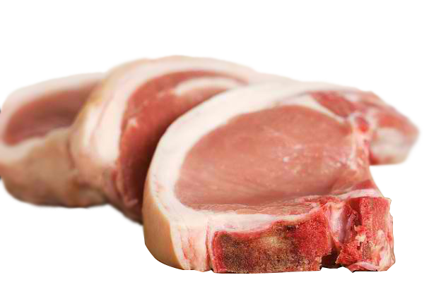

Meat, Poultry, Fish, Eggs, Beans and Nuts

Why are meat, poultry, fish, and other foods in this group important?
Meat, poultry, and fish supply protein, B vitamins, iron, and zinc. The other foods in this group — drybeans, eggs, and nuts —are similar to meats in providing protein and most vitamins and minerals.The Food Guide Pyramid suggests 2 to 3 servings each day of foods from this group. The total amount of these servings should be the equivalentof 5 to 7 ounces of cooked lean meat, poultry, or fish per day.
Much of the protein in your diet comes from foods on this shelf. Go for a variety of choices. Choose lean meat, trim excess fat from meat and remove skin from poultry. Limit processed meats such as bacon or ham, because these are usually high in fat and salt. You do not need large amounts of meat and poultry to satisfy your nutritional needs. Iron rich foods such as red meat and egg yolks are important for children, teenagers and women. Have a vitamin C food or drink (such as orange juice) in the same meal with the iron-rich food to increase the amount of iron you absorb.Other good sources of protein are beans and peas when eaten with wholegrain breads, rice or pasta. They are also fat-free. If you are a vegetarian and get your protein regularly from cheese, always choose lower fat cheeses.
What counts as a serving?
1 serving is:
- Count 2-3 ounces of cooked lean meat, poultry,or fish as a serving. A 3-ounce piece of meat is about the size of an average hamburger, orther amount of meat on a medium chicken breast half.
- For other foods in this group, count 1/2 cup of cooked dry beans or 1 egg as 1 ounce of lean meat. 2 tablespoons of peanut butter or 1/3 cup of nuts count as 1 ounce of meat (about 1/3 serving).
- 50-75g/2-3oz cooked lean beef, pork, lamb, lean mince, chicken (This is about 100g/4oz of raw meat or poultry and is about the size of a pack of cards)
- 100g/4oz cooked oily fish (salmon, mackerel, sardines) or white fish (cod, haddock, plaice)
- 2 eggs- limit to 7 eggs a week
- 100g/4oz soya or tofu
- 125g/5oz hummus
- 6 dessertspoons of peas, beans (includes baked beans) or lentils
- 40g/1.5oz unsalted nuts or peanut butter or seeds
Here are some selection tips on lean choices:
- Choose lean meat, poultry without skin, fish, and dry beans and peasoften. They are the choices lowest in fat.
- Prepare meats inlowfat ways:
- Trim away all the fat you can see.
- Broil, roast, or boil these foods, instead of frying them.
- Go easy on egg yolks; they are high in cholesterol. Use only one yolk per person in egg dishes. Make larger portions by adding extra egg whites.
- Nuts and seeds are high in fat, so eat them in moderation.

**Try to have fish at least twice a week and oily fish at least once a week.
Pregnant and breastfeeding women should limit their consumption of tuna
to no more than one serving a week.


The Food Guide Pyramid ©
All rights reserved.
2016